Scene 1Warm-Up
▶ Start hereHow your Wonder Films lessons work1-minute videoOpen ▾
🎯 TodayI can…
- explain what a variation is and give an example from a Florida animal.
- compare two individuals of the same species and identify which variation gives a survival advantage.
- use evidence to explain why survival advantages matter for a species over time.

🔎 Mystery specimenWho is hiding in this shell?
What to do: Press Inspect specimen. Move the magnifying lens over the animal, then tap 3 things you notice.

📚 Word WallWords scientists use
What to do: Tap or click each card to flip it and read what the word means.
Scene 2The Lesson
🔀 Part 1Not Every Individual Is the Same
In Lesson 30.01, you learned that adaptations help animals survive. Now look closely at a population of one kind of animal. No two individuals are exactly alike. One beach mouse is paler. One tortoise has wider front legs. These small differences are called variations.
🎞️ Put the scenes in orderHow does a gopher tortoise survive a fire?
What to do: Drag each photo into the film strip, from first to last. You can also tap a photo, then tap a frame. Get the order right and your strip becomes a movie.
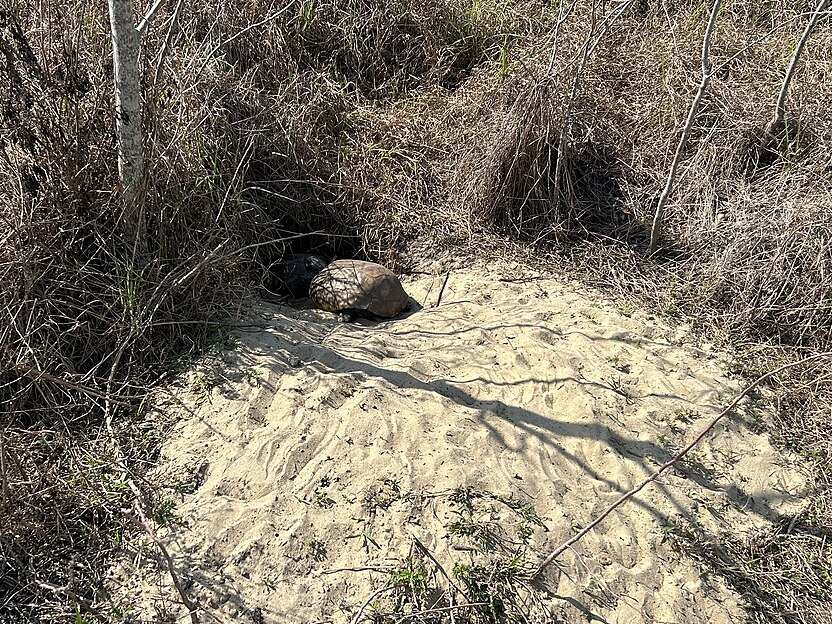
Lena says, "Variation is only about how an animal looks." What do you think?
🏆 Part 2When a Small Difference Matters
Most variations don't change much. But some do. In Florida scrub, fires sweep through every few years. A tortoise that digs a deeper burrow stays cooler underground, so its variation is a survival advantage.
Survivors have young, and the young can inherit the helpful characteristic. Scientists think this is how, over many generations, a whole population changes.
🧪 The Owl TestWhich mouse can an owl spot?
What to do: Follow the steps one at a time. You will pick, test, and then explain.
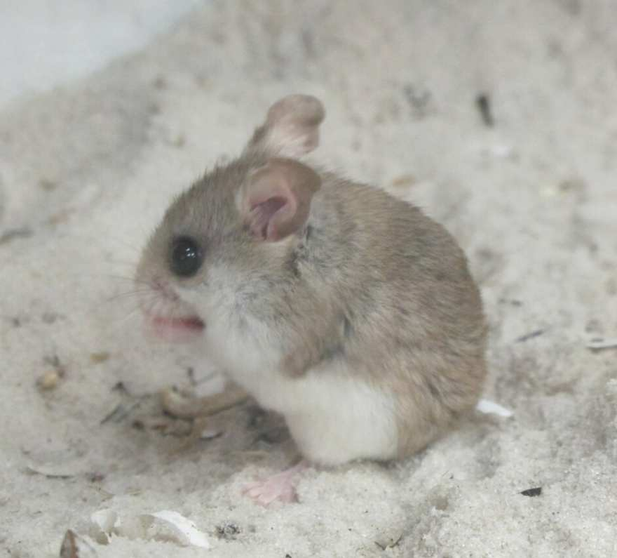
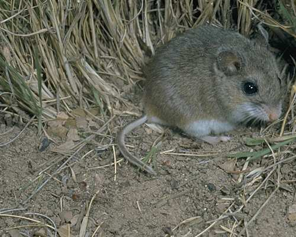
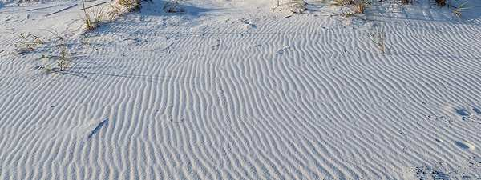
White dune sand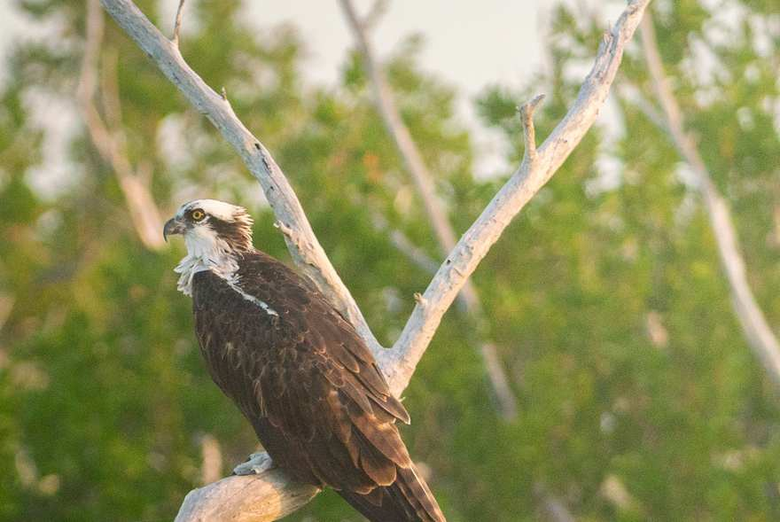
🔬 Part 3Evidence and Animal Groups
Scientists use evidence: observations and measurements, like a mouse's fur color or how deep a burrow goes. They also sort animals into groups. Mammals have fur, and most give birth to live young. Birds have feathers and lay eggs. Reptiles have dry scales. Amphibians have smooth, wet skin. Fish have gills. All of these are vertebrates, animals with a backbone. Insects have no backbone.
🕳️ Under the BurrowFollow the burrow down, one stop at a time
What to do: First, make a prediction. Then brush the glowing stop: drag across it (or tap it again and again) until the photo shows.
A fire is coming. Do you predict the tortoise is the only animal that hides in its burrow?
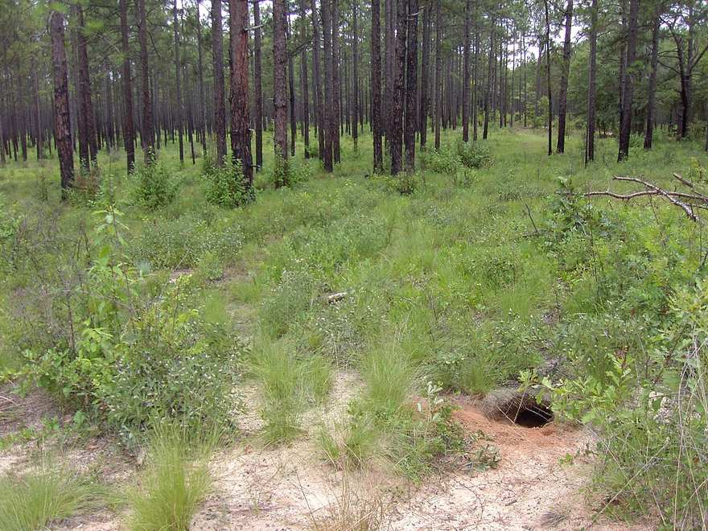
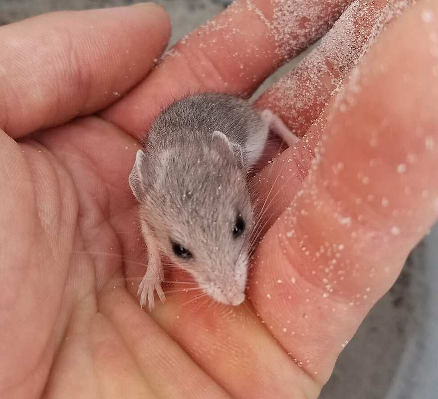
Stop 1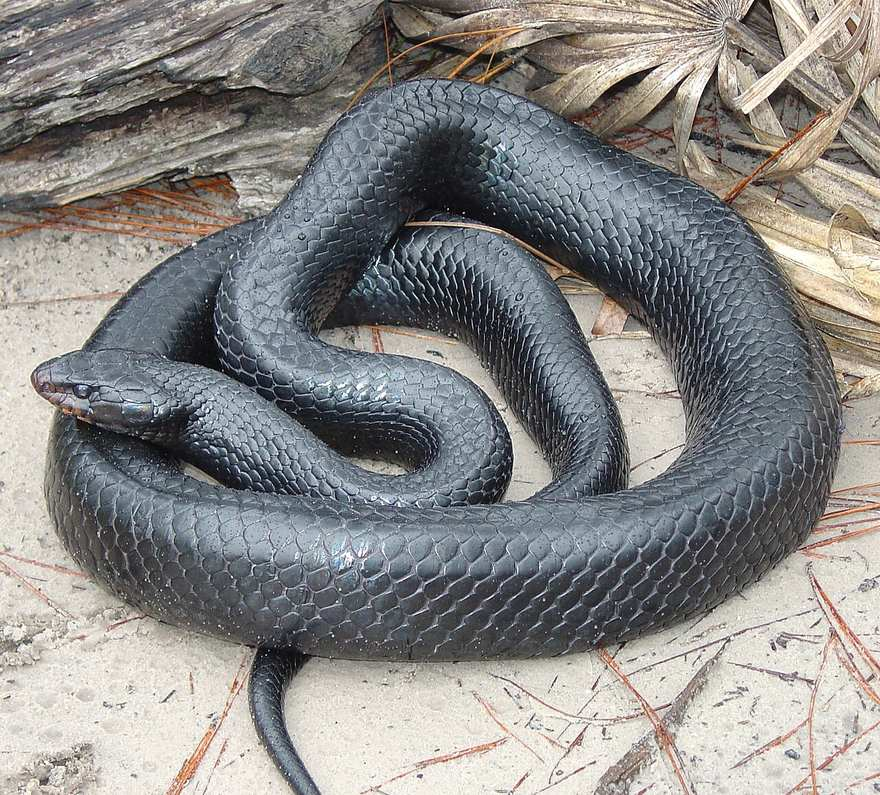
Stop 2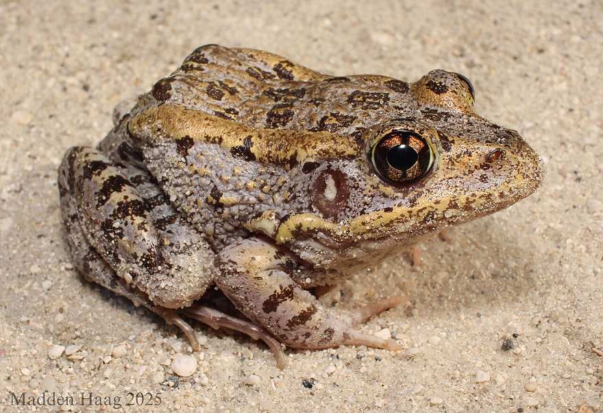
Stop 3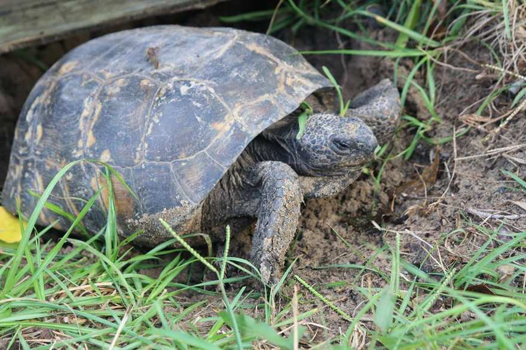
Stop 4One burrow, many guests. Scientists have found more than 350 kinds of animals using gopher tortoise burrows. Deep underground, the soil stays cool even when fire burns above.
Sam says, "Every difference between two animals is a survival advantage." What do you think?
Burrow City
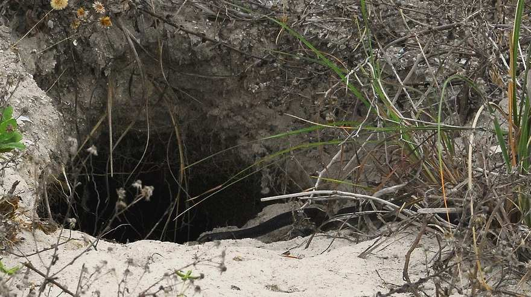
A gopher tortoise burrow can be as long as a school bus. Deep inside, it stays cool in summer and safe during fires.
Scientists have found more than 350 kinds of animals using these burrows: snakes, frogs, mice, insects, and more.
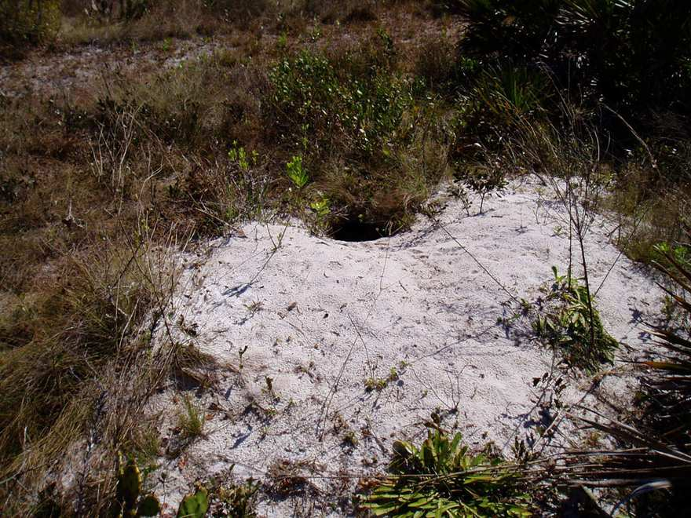
🕵️ Part 4Variation Files
What to do: Pick 3 cards, one at a time. Tap the variation you see, then name its animal group. Predict if the variation helps, hurts, or makes no real difference, and see the real place.
| Card | My observation | Animal group | Does it help? | My evidence |
|---|
🗂️ Sort the variationsUse your evidence to sort the variations OPTIONALOpen ▾
What to do: Pick one you solved. Pick the place it points to, then pick the living things that belong there.
Pick one from your chart and explain it.
Start with: "Card __ shows…"
Scene 3Self-Check
What is a variation?
A dry spell hits south Florida and the water drops. Spoonbill A has a slightly longer bill than Spoonbill B. What is the most likely outcome?
Which statement best describes how a variation becomes a survival advantage?
Scene 4Assignment
🔍 Part AName the science idea
What to do: Read each one. Pick the best answer.
1. Two gopher tortoises in the same scrub: one has slightly wider front legs than the other.
2. Wide, flat front legs that help every gopher tortoise dig a burrow.
3. All the beach mice living on one Florida beach.
4. One single pale beach mouse.
5. Scrub-jay family members taking turns keeping watch for hawks.
🚀 Part BShort answer
What to do: Answer in complete sentences. Use your science words.
1. Explain the difference between an adaptation and a variation. Use an example from today's investigation to make the difference clear.
2. Spoonbill A (longer bill) survives a dry spell and raises young, and Spoonbill B does not. What might happen to the spoonbill population over many generations? Use the words population and characteristic.
✍️ Write and explainChoose one variation pair from today. Does the variation give one individual a survival advantage? Use evidence to support your answer.
What to do: Pick one from your evidence chart. Answer the three questions. Use at least one of the science words under the boxes.
Start with: "I think the variation in [characteristic] gives one individual a survival advantage because…"
Start with: "I know this because when I compared the two individuals, I noticed…"
Start with: "This makes sense because in this habitat, an individual without this variation would…"
🎨 Part CDraw and label
What to do: Draw two individuals of the same Florida animal side by side. Show one variation between them, in a body part or a behavior. Label the variation on each one, and say which has the survival advantage.
🎬 Your question from Scene 1Can you answer it now?
What do you still wonder about? Write your question here. Then answer it.
📋 My answersEverything you wrote, in one place
(Your answers show up here as you write.)
How to turn in: Copy your answers and paste them into the Canvas assignment. Or download the file and upload it. Then press Save my drawing in Part C and upload your drawing too.
✅ Checklist
What to do: Tap each item when it is done. Items you finish on the page check themselves.
- My evidence chart has 3 variation cards and my explanation.
- Part A: all five answered.
- Part B: questions 1 and 2.
- Part C: my drawing and both labels.
- Write and explain, with at least one science word.
🎬 Premiere my variation storyYour exhibit
What to do: Check your exhibit. Pick the one you wrote about, add your first name, then press Premiere film.
I observed…
Its animal group…
My evidence…
It tells us…
🎞️ This film's frames
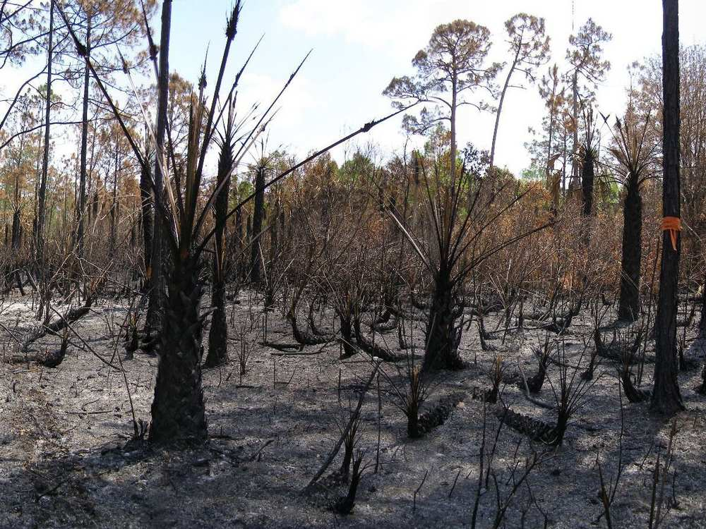
Fire day
The Owl Test
Under the Burrow
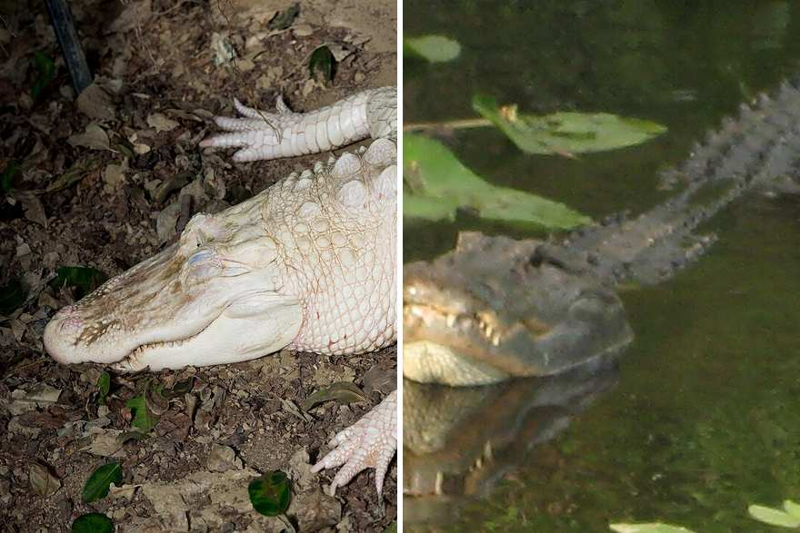
Variation files
Earn all four frames in the Lesson, then finish the checklist.
🔜 Coming up nextComing up next: 31.01
What Threatens Florida Ecosystems? Next time, find out what puts Florida's wild places and animals in danger, and what people can do to help.
Photo and music credits
- Albino Alligator (20914094104), William Warby from London, England, CC BY 2.0
- Corkscrew swamp sanctuary 4, Bobyellow, CC BY-SA 4.0
- Key Deer on Big Pine Key, EdoDodo, CC BY-SA 3.0
- KEY DEER (Odocoileus virginianus clavium) (5-7-14) big pine key, monroe co, f…, ALAN SCHMIERER, CC0
- NASA Kennedy Wildlife - Florida Scrub Jay (3), Ben Smegelsky, Public domain
- Florida Black Bear Scenic Byway - Hikers on the Yearling Trail - NARA - 7718416, Unknown authorUnknown author or not provided, Public domain
- Gopher Tortoise - Gopherus polyphemus, Lake June-in-Winter Scrub State Park, …, Judy Gallagher, CC BY 2.0
- Roseate Spoonbill, NPSPhoto (9101514610), Everglades NPS from Homestead, Florida, United States, Public domain
- Shark River Slough - Everglades National Park - DSC09453, Daderot, CC0
- Gopher-tortoise-hole-1, No machine-readable author provided. Bastique assumed (based, CC BY-SA 3.0
- Prescribed Fire Transition Panoramic (5018062644), U.S. Fish and Wildlife Service Southeast Region, Public domain
- Gopher Tortoise adjusting the entrance to it's burrow a bit - Andrea Westmore…, Andrea Westmoreland from DeLand, United States, CC BY-SA 2.0
- Peromyscus polionotus oldfield mouse, Roger W. Barbour, United States Fish and Wildlife Service, Public domain
- Gopher tortoise entering burrow, Gary2863 at English Wikipedia, Public domain
- Pensacola Beach - White Sands, Florida Coast (27268946483), Tony Webster from Minneapolis, Minnesota, United States, CC BY-SA 2.0
- Merritt Island Unit 4.3 2 12 13 (8474516342), U.S. Fish and Wildlife Service Southeast Region, Public domain
- Usfws-perdido-key-beach-mouse-large, Ray-Culp, Melody/USFWS, Public domain
- Florida scrub with plume of smoke from prescribed burn in the distance - Arch…, Dsandii, CC BY-SA 4.0
- Podomys floridanus, Scott Ward, CC BY 4.0
- Eastern Indigo Snake, Dirk Stevenson, Public domain
- Gopher frog (Rana capito) Madden Haag, MH Herpetology, CC BY-SA 4.0
- Gopher Tortoise in Burrow (e54bf14c-3e4b-4973-a572-8bc789df59c8), NPS Photo, Public domain
- Osprey (53412534453), evergladesnps, Public domain
- Gopher tortoise, Librarylady813, CC BY-SA 4.0
- Gopher tortoise burrow and habitat (Gopherus polyphemus) - DPLA - c9acf959b5b…, Department of the Interior. U.S. Fish and Wildlife Service. , Public domain
- Gopherus polyphemus (front), Hans Hillewaert, CC BY-SA 4.0
- Black Racer at Entrance to Gopher Tortoise Burrow - Flickr - Andrea Westmorel…, Andrea Westmoreland from DeLand, United States, CC BY-SA 2.0
- Music: In the Hall of the Mountain King, from Peer Gynt (Edvard Grieg), Musopen Symphony Orchestra, public domain recording (via Wikimedia Commons).
- Opti the owl: Optima Academy. Sound effects are made by the page. The burrow movie, the Owl Test, and the burrow cutaway are models; every place photo is real. Two-photo cards put two real photos side by side. The fire photos show planned burns set by wildlife workers.